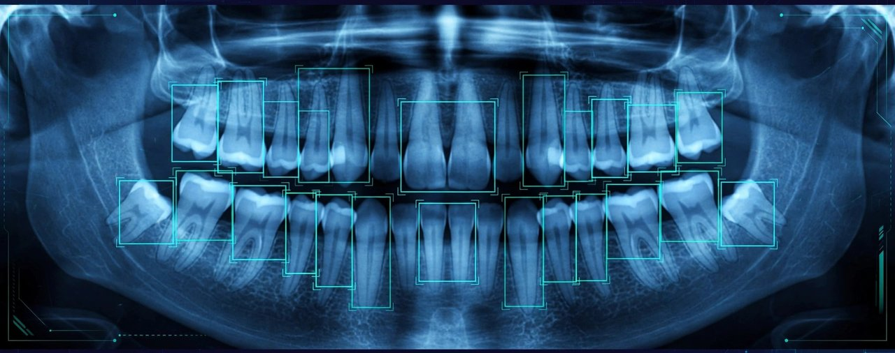

Deep Learning · Computer Vision
Dental X-Ray Super-Resolution & Disease Detection
SRCNN image enhancement (PSNR 27.34 dB, SSIM 0.858) + YOLOv8 detection of cavities, fillings, implants and impacted teeth on 1,269 X-rays — including the honest finding that the "enhanced" retrain performed worse (mAP@50 0.560 vs 0.809), so the baseline ships.
YOLOv8 mAP@50 0.809
View on GitHub ↗